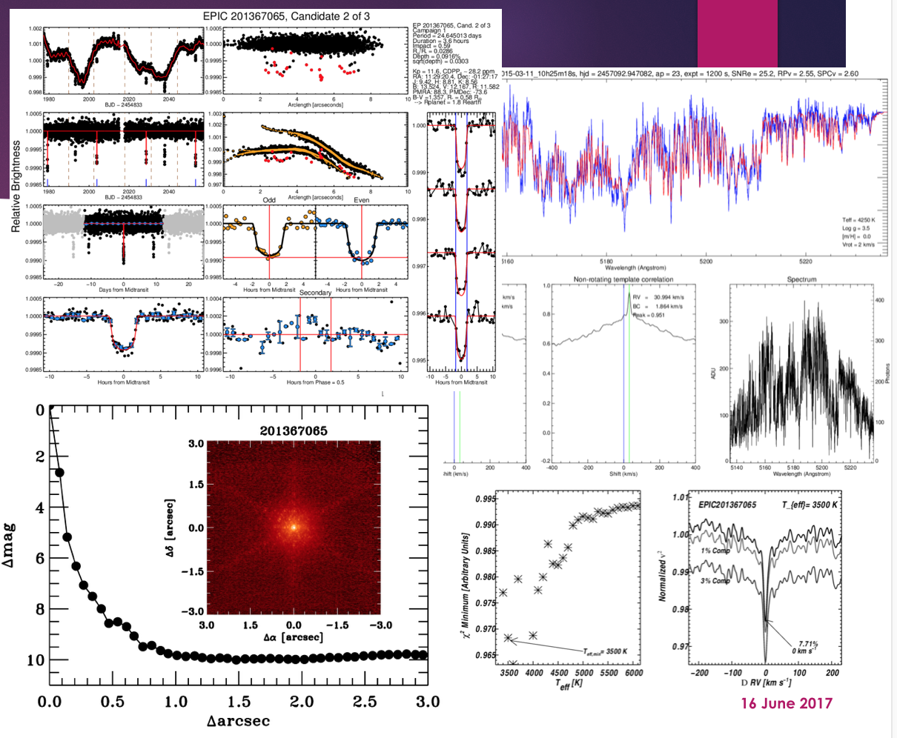

TESS Follow-Up Observing Program (TFOP)
The TESS Follow-Up Observing Program (TFOP) is a large working group of astronomical observers brought together to provide follow-up observations to support the TESS Mission's primary goal of measuring the masses for 50 planets smaller than 4 Earth radii, in addition to organizing and carrying out follow-up of TESS Objects of Interest (TOIs). Stars hosting high priority planet candidates will be observed to establish reliable stellar parameters, confirm the existence of planets, refine their radii, and measure planet masses.
TFOP is led by the Smithsonian Astrophysical Observatory (SAO), in coordination with MIT, as part of the TESS Science Office. The goals for TFOP are to foster communication and coordination among the TESS Science Team members and the community in order to maximize scientific output and minimize duplication of effort.
The TFOP is organized into five sub-groups: Seeing Limited Photometry, Recon Spectroscopy, High-Resolution Imaging, Precise Radial Velocities, and Space Photometry. TFOP observations will be performed with committed time on the Las Cumbres Observatory Global Telescope Network (for photometry and spectroscopy), the MEarth (photometry) and TRES (spectroscopy) observatories and numerous other facilities through the usual telescope time allocation processes. Currently over 40 working groups (each representing a team and facility from around the world) are involved in TFOP and additional participation and follow-up programs are welcome.
Exoplanet Follow-up Observing Program (ExoFOP) for TESS
ExoFOP is a web-based service developed and operated by the NASA Exoplanet Science Institute (NExScI) originally for the Kepler and K2 Follow-Up Observation Programs. ExoFOP will play a key role in coordinating TESS Follow-Up Observing Program (TFOP) activities and hosting observations and tools. ExoFOP is a 'sand-box' for the community to share data and information regarding follow-up observations to help facilitate the efficient and effective use of community telescope resources. ExoFOP is connected to and integrated with the NASA Exoplanet Archive.
ExoFOP hosts a dedicated page for TESS, ExoFOP-TESS, with a format similar to the Kepler/K2 pages. ExoFOP-TESS currently contains overview pages for each of the 10.8 million stars in the TESS Candidate Target list (CTL). These pages contain data from the TESS Input Catalog (TIC) Version 5, including coordinates, magnitudes, stellar parameters, and planet parameters (if available).
ExoFOP-TESS will include:
- Summaries of TESS-observed targets
- Overview of individual targets
- Summary of observations
- Observing notes
- Links to outside services (Exoplanet Archive tools, MAST data and documentation, Simbad and other host star resources, community-produced light curves and products, etc.)
- Telescope resource calendar
All files (data/image/notes) can be uploaded in any format, in single or bulk-uploads. Attached notes can be html to enable linking within ExoFOP or outside. ExoFOP-TESS products will be searchable and available to sort and download. A tool to follow specific targets, or sets of targets, can be enabled via a "My Targets" feature with an option for email updates.
The ExoFOP pages for Kepler and K2 can be viewed as a preview for what is coming-soon for ExoFOP-TESS.

Examples of supporting follow-up observation results that can be uploaded to ExoFOP. Image Credit: D. Ciardi/NexScI